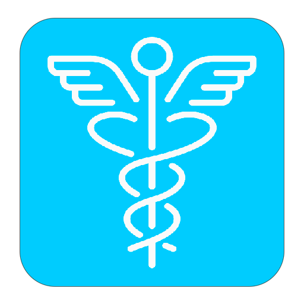

CHAWIS
Inicio
Cuidados por enfermedad del asma
El asma es una enfermedad inflamatoria crónica de las vías aéreas, en algunos momentos se reciben estímulos que pueden ocasionar la inflamación de las vías respiratorias, cerreando los bronquios y haciendo que el respirar sea difícil.
Salud para todos
Este año como parte de la celebración del Día Mundial de la Salud, queremos resaltar la importancia de promover y mantener los buenos hábitos
Cuidados en Semana Santa
La Semana Santa es un tiempo de reflexión y recogimiento espiritual. En Colombia, muchas familias aprovechan el momento para compartir en familia, ya sea en las ciudades natales o viajando a otros sitios.
Si no tienes cuenta, te invitamos a registrate
La investigación en el HUSI
El HUSI declara en su misión el compromiso con "(…) el desarrollo de la ciencia y del país promoviendo y realizando investigación". La investigación en el HUSI es concebida como un servicio primordial conducente a la apropiación, trasformación y generación de conocimientos. Está orientada al mejoramiento de las condiciones de vida, y se fundamenta en el respeto de la dignidad humana y en el reconocimiento del carácter multicultural de la sociedad.
La Dirección Científica del Hospital lidera los procesos de investigación de la institución. La Oficina de Investigaciones depende de esta Dirección y es la instancia encargada de gestionar los procesos que se desarrollan en el Hospital.
Los proyectos de investigación son liderados por empleados, con la participación de docentes y estudiantes a través del convenio docencia servicio con la Pontifica Universidad Javeriana, en alianza con otras instituciones de salud, instituciones académicas, la empresa y el Estado.
Servicios
Cardiología
- Ecocardiografía por strés
- Ecocardiografía transesofágica, transtorácico
- Electrocardiografía
- Electrofisiología, marcapasos y arritmias
- Hemodinamia
- Monitoreo Holter
- Prueba de Esfuerzo
- Monitoreo Presión arterial - MAPA
Fisiatría y estudio electro diagnóstico
- Consulta de adultos y pediatrica
- Electromiografía y velocidad de conducción
- Electromiografía de esfínter anal
- Test de Lambert
- Electromiografía facial
- Electromiografía de diafragma
- Electroencefalograma
- Bloqueo con toxina botulínica
Imágenes Diagnósticas
- Tomografía axial computarizada / Simple y contrastada
- Resonancia Magnética Simple y contrastada
- Rayos X Simple
- Procedimientos guiados por Ecografías
- Doppler venoso y arterial
- Angiotac Coronario
- Procedimientos guiados por Tomografía
- Ecografía mamaria
Gastroenterología adultos
- Endoscopia
- Endoscopia digestiva superior
- Colonoscopia
- CEPRE Colagiopancreatografia dilatación Neumática
- CEPRE Colagiopancreatografia drenaje Biliar y esfinterotomia
- Dilataciones esofágicas- Pilorica- duodenal
- Sten esofágico, pilórico y duodenal
- Terapias con argón
Neumología
- Espirometrías
- Broncoscopias
- Dilatación de tráquea - bronquio
- Colocación de sten
Radiología Intervencionista
- Intervencionismo vascular periférico
- Intervencionismo periférico
Sobre nosotros
Misión
Somos un hospital público que presta servicios de salud de forma integral, segura y humana, comprometido con el desarrollo del talento humano en salud y la investigación.
Visión
Para 2027 seremos un hospital público universitario líder por su modelo de atención innovador y por ser generador de experiencias positivas en sus usuarios, sus colaboradores y su entorno.
Propuesta de valor
Ser una institución pública integral de salud, centrada en el paciente y su familia, referente en calidad y seguridad del paciente, competitiva, líder en modelos de atención y gestora de conocimiento e innovación.
Mega
Para el 2027 el Hospital CHAWIS duplicará su aporte a la sociedad en la atención satisfactoria de pacientes complejos.
Principios
- Equidad
- Eficiencia
- Transparencia
- Calidad
- Responsabilidad social

Urgencias
En el servicio de Urgencias (Sede 1) brindamos atención las 24 horas del día a pacientes adultos y pediátricos, contamos con un equipo humano altamente especializado, para brindar atención en patologías críticas
Ir al inicio


Medios de pago


El mejor servicio, a tu disposición

Noticias
- Si bien no existe una cura y aún se desconocen sus causas, la adherencia a los tratamientos ayudan a controlar la enfermedad. El lupus puede tener muchos síntomas que difieren de una persona a otra.
- El movimiento internacional de la Cruz Roja y la Media Luna cuenta con cerca de 15 de millones voluntarios en 192 países que aúnan esfuerzos para salvar vidas
- También conocida como la enfermedad de los huesos de cristal, los síntomas dependen de su severidad: estos van desde una leve fragilidad ósea hasta deformidades graves en los huesos.
- Las personas que no reciben un tratamiento adecuado contra el asma pueden sufrir trastornos del sueño, cansancio durante el día y problemas de concentración. Los síntomas más comunes son tos, sonidos agudos al respirar, disnea y opresión torácica.
- Un incidente no es más que la punta del iceberg, una señal de un problema mucho mayor bajo la superficie. -Don Brown-